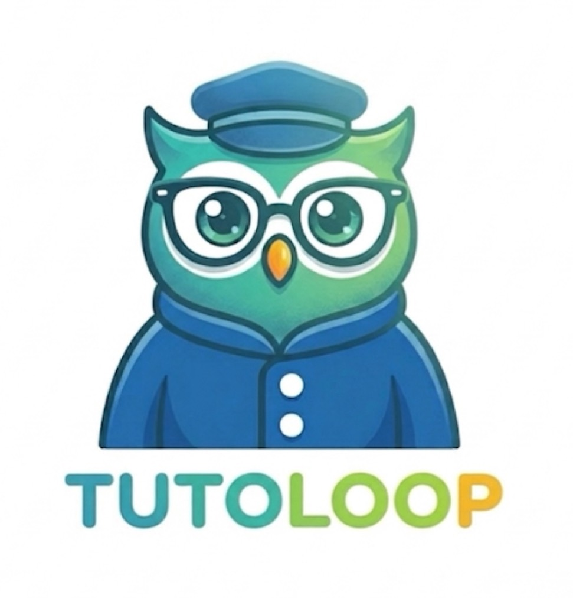
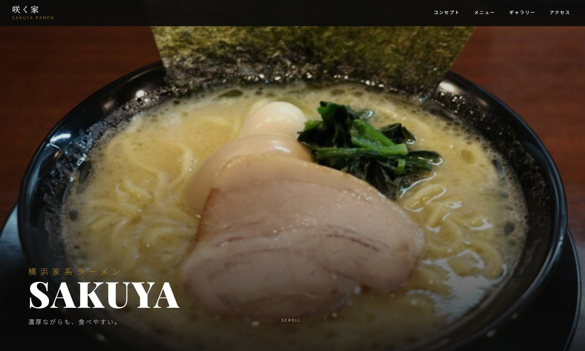
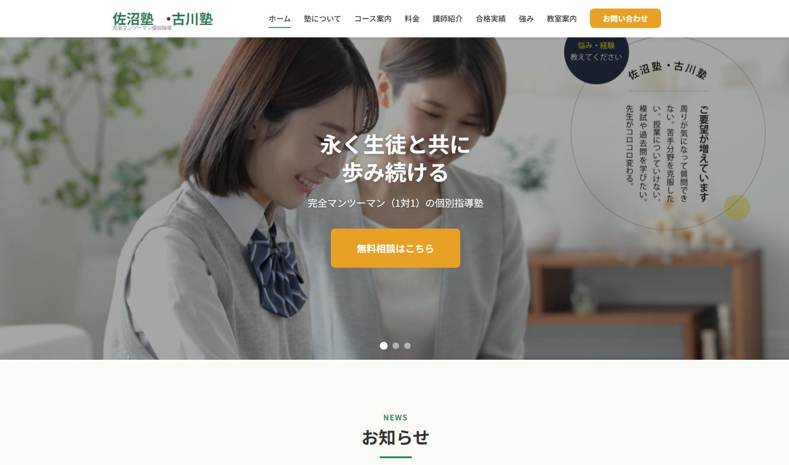
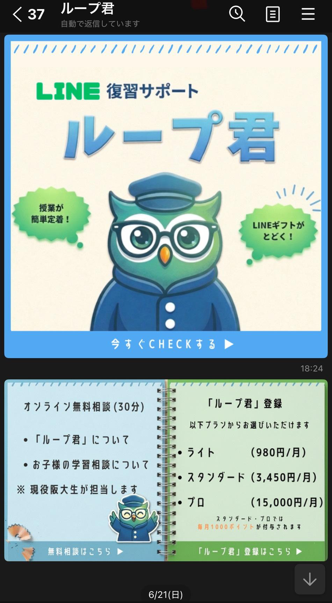

01
学習塾の運営
現役阪大生による個別指導と、LINE×AI復習教材「ループ君」を運営しています。テクノロジー×教育で子どもたちの学びをサポート。
阪大近くの飲食店を、もっと元気に！
ご相談
受付中！

ウェブサイトも、公式LINEも、宣伝も。
お店の「発信」のぜんぶを、
現役阪大生チームが
まるっとサポートします。
TUTOLOOP（チュートループ）は、
大阪大学の学生を中心に活動するチームです。
勉強も、ファッションも、まちのお店も。
「ループ」のように人と人をつなげています。
現役阪大生による個別指導と、LINE×AI復習教材「ループ君」を運営しています。テクノロジー×教育で子どもたちの学びをサポート。
大阪大学のフリーマーケットサークルとして、古着回収やアートイベントを地域で開催。まちと学生の接点をつくっています。
阪大近くの店舗のウェブサイト制作・公式LINE運用を支援。ITが得意な学生チームが、お店の「発信」を丸ごと引き受けます。
お店の雰囲気やメニュー、伝えたいことをじっくりヒアリングして、
スマホでもきれいに見えるホームページを一からデザイン・制作します。
つくって終わりではなく、その後の運用までずっと伴走します。


リピーターづくりに一番効くのが公式LINE。
めんどうな初期設定から毎月の配信まで、ぜんぶ代行します。
お店はいつも通り営業するだけでOKです。
配信事例

総勢100人の阪大生に向けてお店をPR
TUTOLOOPのウェブサイトを公開しました